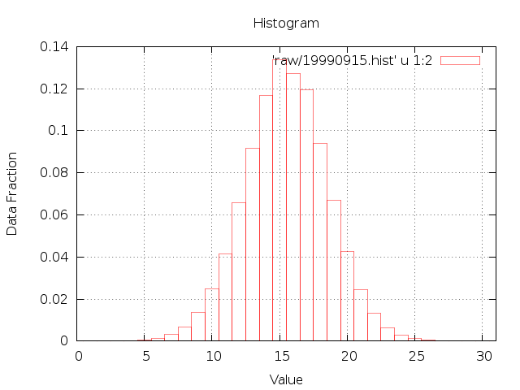

ANSI-C program: hist_IQ.c
NAME
hist_IQ - Calculates
histogram for I and Q channel of uncompressed SAR raw data (IQ
data).
SYNOPSIShist_IQ <SAR_par>
<PROC_par> <signal_data> <histogram> [loff]
[nl]
| <SAR_par> | SAR sensor parameter file |
| <PROC_par> | MSP processing parameter file |
| <signal_data> | Uncompressed SAR raw data (IQ data) |
| <histogram> | histogram output file |
| [loff] | number of lines offset (default=parameter file value) |
| <nl> | number of lines to estimate histogram (default=1024) |
EXAMPLE
hist_IQ ERS1_ESA.par
p19990421.slc.par 19990421.raw 19990421.hist 6000 1024
DESCRIPTION
hist_IQ The histogram of the I and Q channel of raw SAR is
calculated. The two histograms are computed separately for a
user-defined window size. The result is written into an ASCII
file, with the integer number in the first column and the
normalized I and Q histograms in columns 2 and 3. These data may
be plotted using plotting program gnuplot.
To plot the histogram with gnuplot on the
screen:
echo "set xrange [0:31]; set grid; set xlabel 'Value';
set ylabel 'Data Fraction'; set title 'Histogram'; plot
'raw/19990915.hist' u 1:2 with boxes lw .5
"|gnuplot
or plot to a png image file with gnuplot:
echo "set term png; set output
'19990915.hist.png'; set xrange [0:31]; set grid;
set xlabel 'Value'; set ylabel 'Data Fraction'; set title
'Histogram \n19990919.fix'; plot 'raw/19990915.hist'
u 1:2 with boxes lw .5 "|gnuplot
The data segment used for the estimation can be specified by
the user by setting the offset in lines relative to the beginning
of the file and the number of lines to use.

SEE ALSO
Users Guide, typedef_MSP.h, MSP Processing Parameter File.